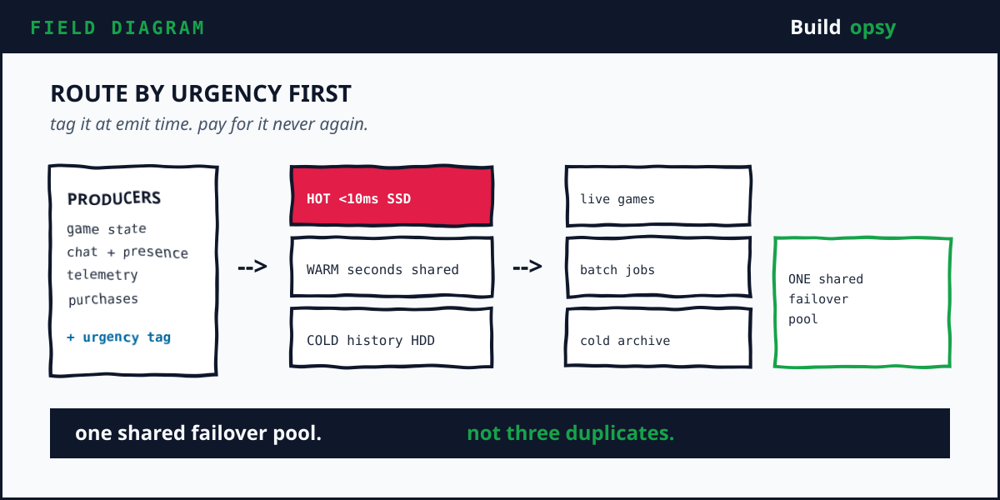
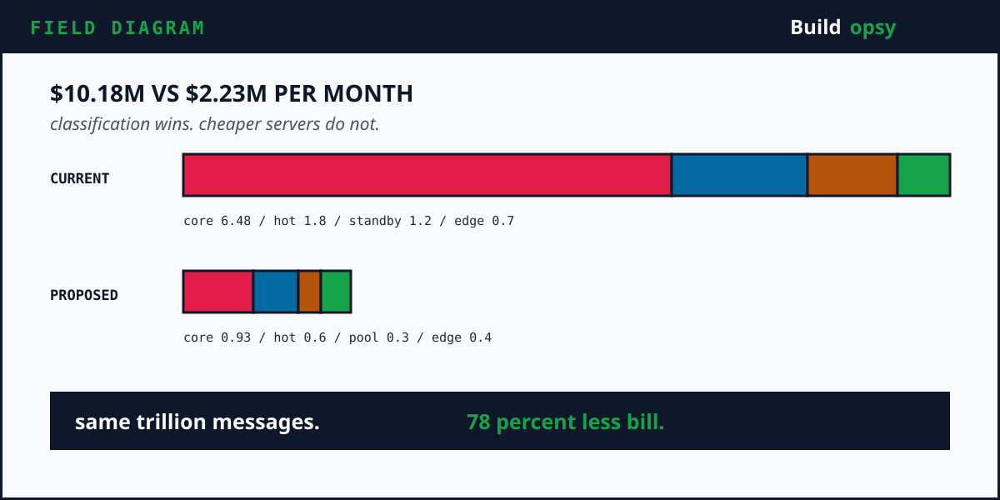

1. The Number That Broke the Whiteboard
Eighteen trillion messages per day. Divide by 86,400 seconds and you get roughly 208 million messages every second, sustained, all day. That volume does not fit on one cluster, one vendor tier, or one whiteboard. Roblox disclosed the figure in September 2026 alongside the hard lesson it bought. Not all traffic deserves the same urgency, yet for years the platform treated it that way.
The split matters more than the sum. Matchmaking traffic needs single-digit millisecond end-to-end latency. A slow match is a dead game. Analytics ingestion, the bulk by volume, tolerates seconds of delay without any player noticing. Serve both through identical tiers with identical redundancy and the patient majority inherits the price of the impatient minority. That inheritance is the entire postmortem.
2. Why Roblox Is the Right Autopsy
Three reasons. First, evidence. Roblox publishes serious engineering writing about its own platform, including a March 2026 cache deep dive plus the September 2026 Kafka post this teardown leans on. Second, money with receipts. Q2 FY26 brought about $1.4 billion in revenue against $2.2 billion in bookings, while management told investors that fresh AI GPU spend now pressures margins alongside softer bookings. Third, a public stance most unicorns avoid. Roblox runs its own data centers, spent over $400 million on its Ashburn site in one year, plus claims public cloud would cost up to ten times more for game traffic. A company that owns its fleet feels every architectural tax directly. No cloud bill to hide behind.
3. Reconstructing the Machine
Producers sit everywhere. Game servers emit state changes. Clients emit telemetry. Chat, presence, purchases, plus moderation signals join the stream. Brokers durably order this firehose. Consumers split into live systems plus batch analytics. Failover rides on a standby cluster with spare capacity. Chaos drills plus game days rehearse host, rack, plus network failures.
The hardware story reads like triage notes. Disk I/O choked first on RAID10 spinning disks, so brokers moved to SSDs for a tenfold throughput jump, trading disk space for speed. Remaining disks flipped from RAID10 to RAID0, doubling write capacity by dropping the mirror. Page cache tuning keeps hot reads in memory. Broker throttles cap runaway tenants. Each fix bought headroom. None of them asked which traffic actually needed it.

4. The Cache War Next Door
The same company fought the same battle in caching. Redis gossip protocol caps practical clusters near 400 to 500 nodes, since every node chats health with every peer. Roblox needed far more, so it federated small clusters behind a client proxy, growing past 6,000 nodes across 15 clusters serving over a billion queries per second at peak. Memory-bound Redis nodes plus compute-bound Envoy proxies then moved into one pool with container isolation, cutting capacity needs by a quarter. The pattern repeats. Find the real constraint, isolate it, share everything else. The next step is a multitenant Valkey service for even denser sharing.
5. The Flaw Every Mixed Pipeline Shares
Uniform treatment of non-uniform traffic is the flaw. A standby cluster sized for total failover duplicates the most expensive capacity instead of the most urgent. Retention on fast disks pays premium rates for data nobody replays. Throttles tuned per machine class still cannot express per use-case priority, since server configs refuse per-tenant nuance. Each of these is a tax on patience. Analytics pays matchmaking prices for matchmaking guarantees it never needed.
6. The 1M msgs/sec Cost Test
Normalize to one million events per second for one month, which holds 2,592,000 seconds. Assume the current-shaped design pushes every event through origin compute at a blended $0.0000025 per event for compute, routing, queueing, plus platform overhead. The core math is 1,000,000 times 2,592,000 seconds times $0.0000025 which equals $6.48M per month.
Add $1.8M for hot SSD storage plus retention, $1.2M for the standby duplicate, plus $0.7M for edge delivery, observability, plus safety systems. The current-shaped envelope reaches about $10.18M per month, roughly $339k per day.
My proposed shape routes by urgency before spending compute. Assume hot traffic keeps 300k events per second on origin at $0.0000012 per event. The core monthly work becomes 300,000 times 2,592,000 times $0.0000012 which equals $933,120. Add $600k for tiered storage, $300k for a shared failover pool instead of a full duplicate, plus $400k for edge plus observability. The proposed envelope is approximately $2.23M per month, roughly $74k per day.
| At 1M msgs/sec | Current-shaped design | Proposed design |
|---|---|---|
| Origin events | 1,000,000/s | 300,000/s |
| Core event work | $6.48M/month | $933k/month |
| Hot storage and retention | $1.8M/month | $600k/month |
| Standby and failover | $1.2M/month | $300k/month |
| Edge and safety layer | $700k/month | $400k/month |
| Total | $10.18M/month | $2.23M/month |
| Difference | $7.95M/month, about 78 percent lower | |

7. What I Would Change Before the Next Trillion
First, route by urgency at the edge. Tag every producer with a latency class at emit time. Hot matchmaking traffic takes the fast path with reserved headroom. Analytics takes shared throughput with backpressure instead of panic. A tag added once saves a fleet forever.
Second, tier the storage physically. Hot SSD for replay windows measured in hours. Shared throughput pools for warm analytics. Cold HDD retention for history nobody replays. Roblox already walks this road with Valkey multitenancy. Extend the same thinking below the cache layer.
Third, share the failover instead of duplicating it. A standby cluster per critical path is insurance priced like the disaster. One shared failover pool with pre-tested capacity plus chaos drills covers the same failures at a fraction of the idle bill.
Fourth, price the wait out of the hot path. My Vercel teardown made this point for serverless. Waiting work should never occupy executing capacity. Batch it, defer it, or move it off the expensive tier entirely.
8. The Verdict
Roblox earned its scale the hard way, on its own metal, with engineering writing most vendors would never publish. The postmortem does not take that away. It names the tax inside the triumph. Eighteen trillion messages a day is not one workload. It is a millisecond workload wearing a multi-second workload as an overcoat, billed at millisecond prices. Separate them by urgency and the same platform costs roughly a fifth as much in this model.
The pattern generalizes beyond gaming. My Replit teardown found agent retries billed like first attempts. Same religion, different crime scene. Classify before you spend or the patient majority keeps funding the impatient minority.
Not every message is urgent. Stop paying like it is.
Keep Reading the Postmortem Series
If tiering by urgency is your new religion, the rest of the series preaches nearby texts. My Perplexity teardown covers the prefill tax behind every AI answer. My Vercel teardown covers paying for idle wait as if it were work. Same religion, different crime scenes.
Sources and Method
Traffic figures, hardware moves, plus financials come from Roblox engineering posts plus investor disclosures linked below. The normalized cost model is my own scenario math, not Roblox telemetry or invoices. Q2 FY26 figures are rounded from the company's investor data sheet.
- Roblox: How Kafka Scaled Past 18 Trillion Messages a Day
- Roblox: Cache Sustained 1.38B QPS Beyond Redis Limits
- Roblox: Making Infrastructure More Efficient and Resilient
- Data Center Dynamics: Roblox Spends Nearly $400M on Ashburn Data Center
- Roblox DevForum: Extended Services for Compute
- MarketScreener: Roblox Q2 2026 Investor Data Sheet
- Longbridge: Roblox Q3 Guide and Margin Framework